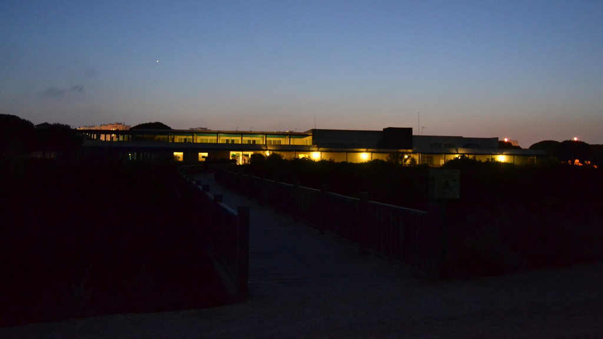
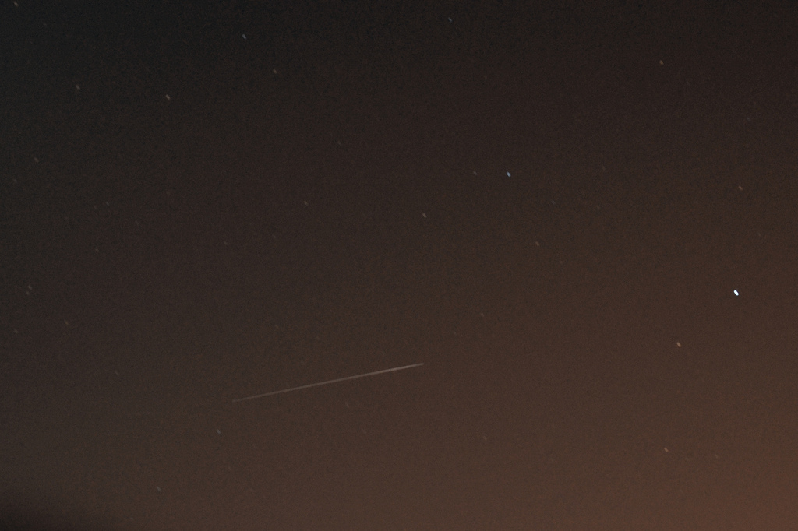
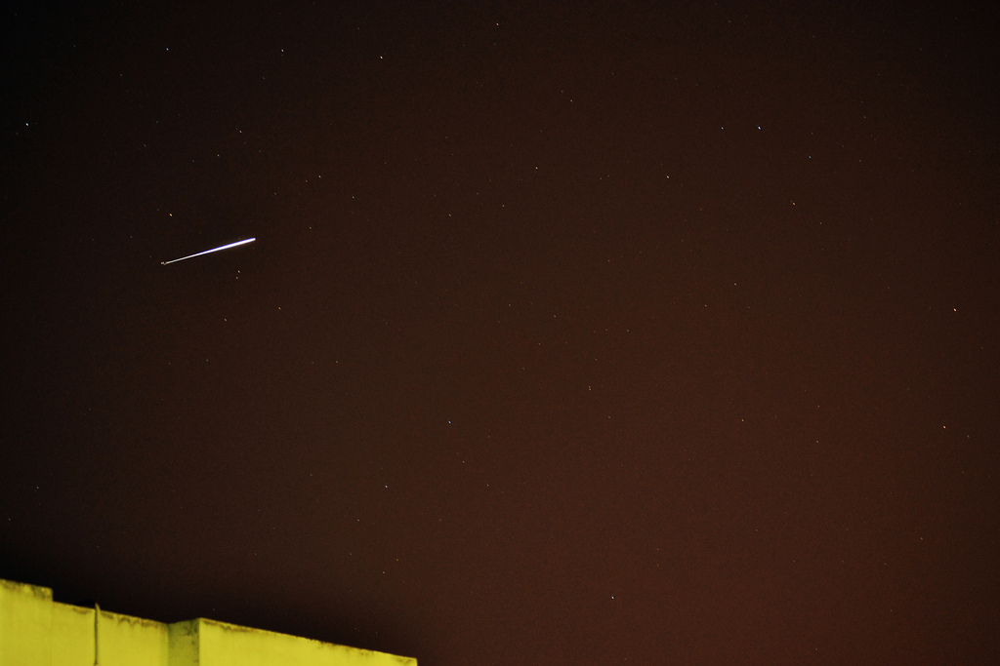
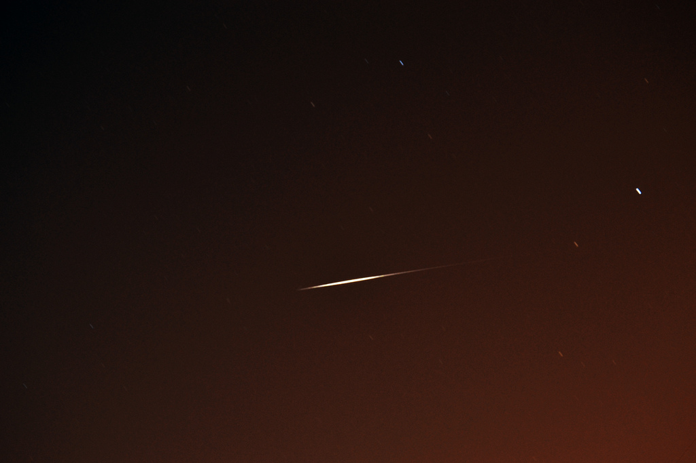

{kind=link}
{kind=link}

{kind=link}
{kind=link}
Iridium 5
Iridium 8
Iridium 34
Iridium 61
|  |
| Venus desde Los Toruños. |
Desde siempre me ha gustado mirar al cielo por la noche, hay algo ahí arriba que me llama la atención. La astronomía se puede dividir en dos partes, la astronomía de observación (parte práctica) y la astronomía teórica (teorías, explicaciones, de cómo funciona el universo). Ha habido épocas que me ha dado más por curiosear libros de astronomía y otros momentos en los que he observado el cielo.
No tengo telescopio aunque sí unos prismáticos 8-24x50 con los que se puede explorar el cielo rápidamente. En el cielo de noche se pueden ver muchas cosas, incluso a ojo desnudo, como los planetas Mercurio, Venus, Marte, Júpiter y Saturno, satélites Iridium o los pasos casi a diario de la ISS. Solo hay que saber dónde mirar. Más adelante intentaré dar algunas indicaciones para que tú también puedas ver todas esas cosas.
En la imagen: Venus visto al atardecer desde el Parque de Los Toruños, provincia de Cádiz. Varios planetas son visibles en distintas épocas del año y se suelen confundir con estrellas. Así que probablemente hayas visto algún planeta a simple vista, sin saberlo.
| Tabla de contenidos |
|---|
|
1. Cómo ver planetas 2. Cómo ver la Estación Espacial Internacional 3. Cómo ver satélites Iridium 4. Eclipses 5. Miscelánea |
Por explicar.
Por explicar.
Los satélites Iridium son un conjunto de 66 satélites de comunicaciones que orbitan la Tierra a unos 780 km de altitud. Bajo ciertas circunstancias el reflejo de la luz del Sol contra sus paneles permite ver un destello en el cielo, durante la noche, el amanecer o el atardecer.
Dado que son tantos satélites y que orbitan varias veces al día, hace que prácticamente todos los días sea posible ver alguno de estos destellos en cualquier parte del mundo. Para saber dónde mirar y a qué hora, debes introducir tus coordenadas en la web heavens-above.com.
Estas son algunas fotografías que he podido tomar desde mi ciudad en la provincia de Cádiz, España, usando una NIKON D3100, trípode y apertura de 30 segundos.
|  | |
 |  |
Iridium 5 |
Iridium 8 |
Iridium 34 |
Iridium 61 |
 |
Esta página fue modificada por última vez el 2017-03-26 21:32:24 (UTC) | Con la tecnología de GitHub pages |